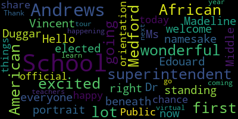

[Edouard-Vincent]: Hello everyone, I'm the superintendent of schools, Dr. Edward Vincent, and I welcome all of you to the Andrews Middle School. This is a wonderful school and right now I am standing beneath the portrait of the namesake, Ms. Madeline Duggar Andrews. She was the first African American elected official in Medford. And by chance, I am the first African American superintendent of schools for Medford Public Schools. I'm so happy to be here today and share this orientation with you. You're going to have a lot of wonderful things happening here at the Andrews School, a lot to learn, excited teachers. And as you go on this virtual tour, you're going to be excited about coming here next year. Thank you.
[Downs]: Welcome to the Andrews. My name is Mike Downs. I'm the principal here. Come on in. Now that you're inside the building, right over here is the main office. The other place that you might need to come to in the morning is over here to our cafeteria and to over here into our gymnasium. Welcome to our gym. As you saw, we have a sign that says Andrews, excellence through responsibility and respect. So come on into our gym. Here, in the morning, you can hang out in here and you can shoot baskets or just hang out with your friends. But we also have some great PE classes that go on here with Mr. Maidment and Ms. Van Doyen. And as you can see, we play hard, we play fair, we play safe. Additionally, we are also part of the GBL, and this is where you'll have your home basketball games, which this year were fantastic. Both our boys and our girls made it to the finals this year. Additionally, this is where we have some of our after school activities. The favorite one that everybody loves at the Andrews is Mr. Zizzo's Dodgeball. There's more activities than that, of course, but that is the number one club that we do have here at the Andrews. So welcome to our gymnasium. Now let's go to our cafeteria. Welcome to our cafeteria. Here is where you would come in the morning as well. One of the great things about Medford Public Schools is that we offer free breakfast. So when you come to school, make sure you take advantage of our breakfast, but also remember to pick up after yourself. Also, this is where you're going to have your lunch. And when we have great presentations throughout the year, you'll come in here and our presenters will be up here on the stage. This is our cafeteria. Again, it's a great space, not only for food and for presentations, but a lot of students like to hang out here after school and do work together. Remember, always do your schoolwork whenever you can. In the morning, when the bell rings, what happens is you either leave the couch or the gym, and you go to your side for your team, which is straight this way. A side will be up here, and B side will be over there. Remember, you're on either A side or B side in the sixth grade, and you're on the third floor. Again, this is our main stairway when you go up to your classes for sixth grade. This is the only stairway that we use here at the Andrews. But just to give you a layout of the building, on this side is eighth grade classrooms, and same for over here. However, we have some other things on this side that you may want to be aware of. For instance, our elevator is right here. And then we have our tech lab. Tech lab is part of our exploratory rotation. It's a great class. Almost every student loves it. So come on this way. Welcome to our Tech Lab. As you can tell, there's lots of things that go on here. For instance, you can make rockets. You can use woodworking materials. We also have computers. Basically, Tech Lab has science and technology and engineering. It is for every student of every kind with every interest for our building. Let me show you some of the examples of some of the things that they build in Tech Lab. Here's some great examples. For instance, some rockets are down here. Some bridges, which not only are they beautiful to look at, but there's also some engineering applications. And over here, we have some more bridges. One of the best projects that we do this year is we do this with the popsicle sticks. And you have to make a bridge with popsicle sticks and see how much weight it can hold. Again, that's one of the favorite projects during the year, and welcome to technology. So I just left the cafeteria or the gymnasium. And right across the hall from the technology lab is our nurse's office. If for some reason you're not feeling well or you have some medications that need to be dropped off, please bring them to our nurse. Hi, now I'd like to show you some of our outdoor facilities that we have here at the Andrews. As you can tell, we have this ginormous, that's one of the terms that students here like to use, outdoor play area. This area is for our recess, for our physical education classes, we do soccer out here, we have running out here, our cross-country practice is out here. Again, look at how great this space is for us. We have over here, we have a softball field, and a little further over, we have a baseball field. Again, those are utilized by our physical education classes. And right around the corner, in front of the school, is our basketball court. So one of the great things about when you come to the Andrews is these outdoor facilities that we're able to offer you. As I mentioned earlier, we have a great basketball court for not only our physical education classes, but also for recess on those days when it's raining a little bit or there's snow on the ground. Again, I want to also show you our baseball field right over here. And then right over there is our softball field. Again, this is part of our great athletic complex that we offer here at the engineering. So now we are on the second floor. To my right is the A side for grade seven. And to my left is the B side for seventh grade. However, even as a sixth grader, you have some great opportunities here at the Andrews on the second floor. Come, I'll show you. We are so fortunate here at the Andrews to have outstanding teachers, Ms. Chang and Ms. Baptiste. They are both great teachers and both our band and our orchestra perform during the year and they are absolutely fantastic. This is room 202 of the Andrews. We have our talent show each year, which highlights the great talents of many of our students. We have our musical every year. This is done by Miss Grant, whose room you'll see soon. This musical that she puts on every year is absolutely fantastic. Here's some more examples of our other talent show we had. And over here, we like to highlight student work throughout the year. Now we're going to visit Miss Grant's room, room 204. She is our music teacher as part of our exploratory class. This is Ms. Grant's room again. Look behind me and you'll see several types of instruments. While in this exploratory, you're not only gonna learn how to read music and play different instruments, but the most important part of this music class is Ms. Grant will teach you the Andrews song. So by the end of your sixth grade year, I expect you to know the song by heart. Welcome to our library. So this space is a great space for all students. You can come here in the morning before school. Thank you to Miss Williams. You can come here during lunch. You just have to get a pass from your teacher. And you can even come here after school. We have a collaboration space over here. We have computers for you to do your research. We have breakout spaces for you to read books that you may never have heard of before. But remember, the key is that you read each and every day. When I walk into your English class, I will ask you, what book are you currently reading other than your English book? And I expect something of an answer from you. Part of your exploratory blocks is foreign language. For instance, right now we are in a Spanish room. We also offer Italian. And so I hope that while you're at the Andrews, you'll take advantage of this great opportunity. So now we are in a science room. Actually, we're in Mr. Prowson's science room. Now he won't be one of your teachers next year, but as you can tell, this is a great place to learn. One of the things that Mr. Prowson has is a Chromebook cart in his room. Here at the Andrews, we have nine Chromebook carts, one for each team and three for anyone else that may need one on that particular day. I'm very proud of the fact that we have nine Chromebook carts to support teaching and learning through the use of technology. And you can see Mr. Prowson has a lot going on here. He has a water experiment over there. He's got all kinds of science equipment. He's got his reminder for homework and just to give you a highlight of science at the Andrews. Welcome to Miss Boose's room. She is one of the sixth grade teachers on A-Side for English. And today I'm sitting in one of her director chairs. As you can tell, Miss Boose has lots of student work on her walls. Again, this is Mrs. Boose's English class. Here we go. The next classroom we're going to visit is Mr. Gallagher's art class. Here are some examples of some of the work that students have done in the years past. Welcome to Mr. Gallagher's art room. Come on in. You can see some of the activities that he does and some of his beliefs when it comes to art. Observe, envision, engage, explore, craft, express, reflect, and understand. Here are some examples of student work here at the Andrews. Including, of course, our archway as you walk in. So earlier I mentioned that we have nine Chromebook carts. Seven of them are less than a year old. But we also have a great computer lab where Ms. Perali Bacon will teach you everything from coding and basic technology using the computer. The computers that you see here today are brand new. We just got these computers about two months ago, and they are here for you when you come to the Andrews. The nurse's office, their offices are right here. Mr. Lynch is here, and Ms. Santos is right here. They are here to help you during your time at the Andrews.
|
total time: 0.8 minutes total words: 122  |
|||
{kind=link}